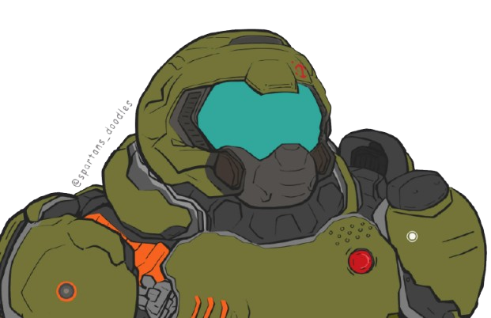

Explora el Mundo de Doom: La Leyenda del Shooter
Sumergete en el icónico universo de Doom, el revolucionario videojuego de disparos en primera persona que marcó un antes y un despues en la industria. Desde su lanzamiento en 1993, Doom ha sido una piedra angular en el genero, conocido por su acción frenetica, graficos innovadores para su epoca y su impactante banda sonora. Descubre su historia, sus personajes, armas y cómo este juego ha influido en generaciones de desarrolladores y jugadores. ¡Preparate para luchar contra hordas de demonios y salvar la Tierra!

Doom no solo revoluciono el mundo de los videojuegos, sino que tambien sento las bases para muchos de los shooters modernos. Su innovador motor grafico, que permitio el movimiento en 3D, y su enfasis en la jugabilidad rápida y directa, lo convirtieron en un referente dentro del género.
A lo largo de los años, Doom ha evolucionado con nuevas entregas y remakes, pero su esencia sigue viva en cada version. Con una comunidad de jugadores leal y un legado que perdura, Doom sigue siendo un titulo fundamental para entender la historia de los videojuegos de accion.
Seguinos en: